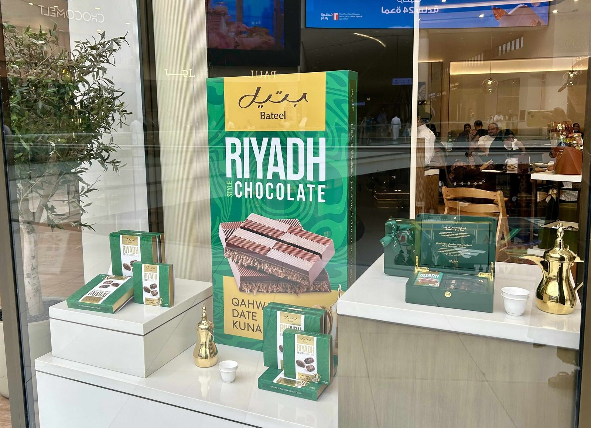
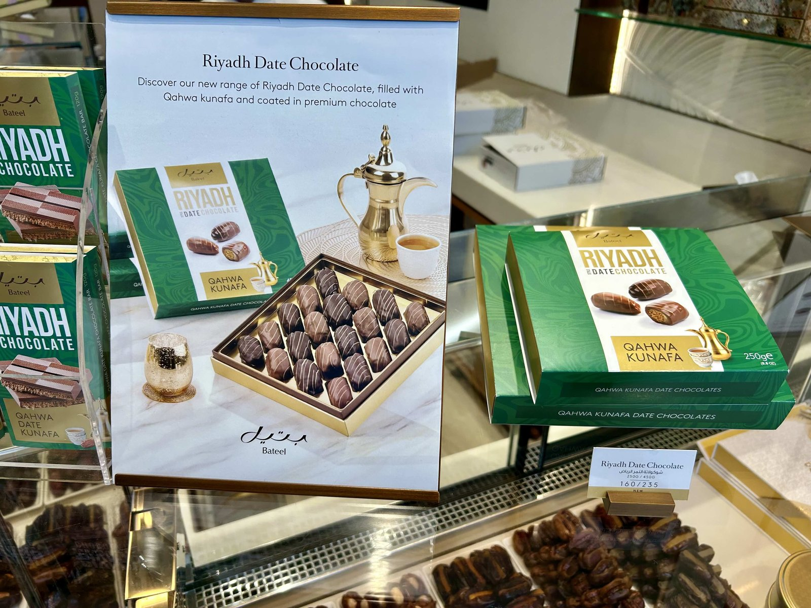
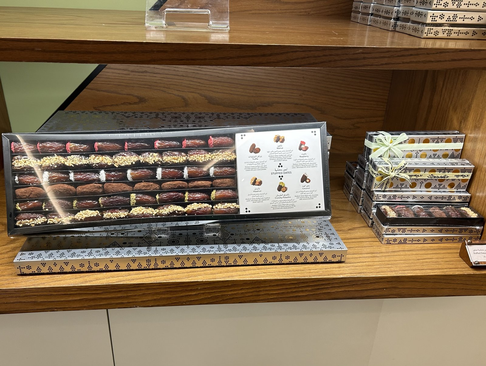
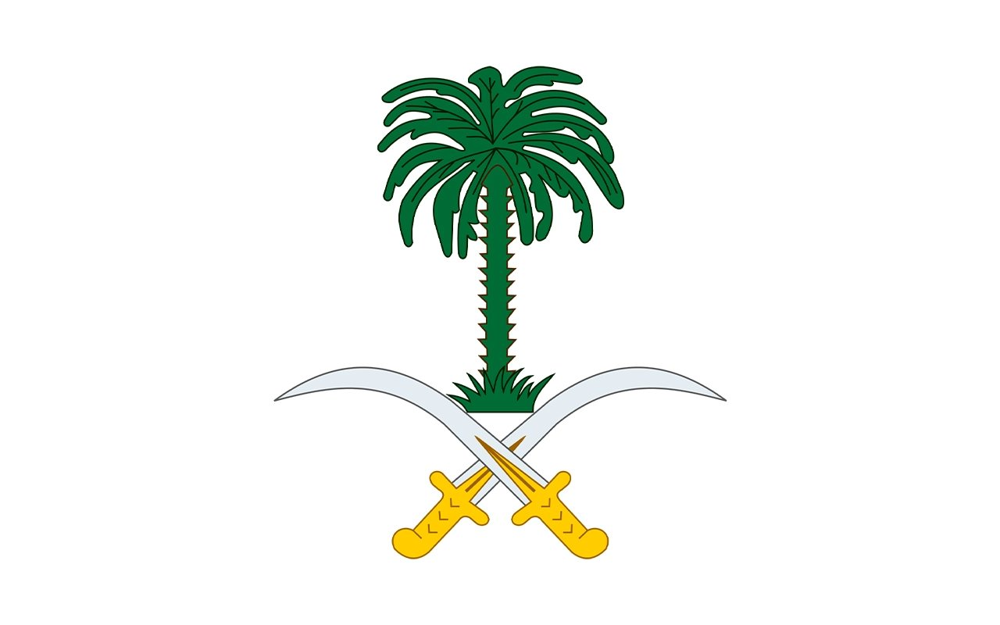
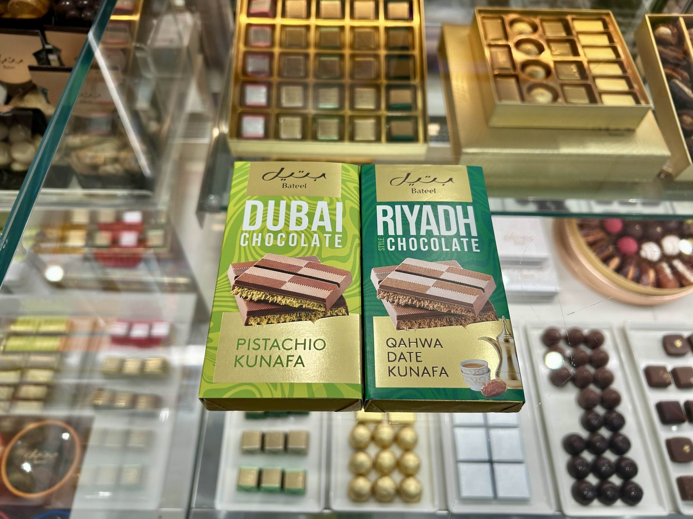
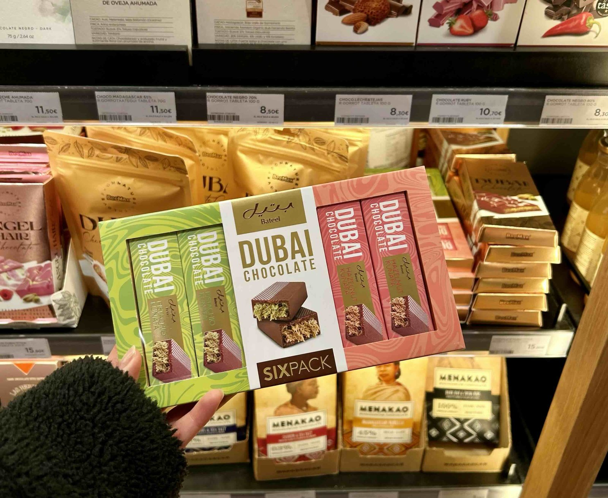

2024년부터 세계적인 인기를 끈 ‘두바이 초콜릿’은 하나의 디저트를 넘어 도시 이름을 앞세운 브랜드로 자리 잡았다. 피스타치오 크림과 바삭한 카다이프(Kataifi)를 채운 식감은 소셜미디어를 타고 빠르게 퍼졌고, 한국에서도 품절 대란이 이어질 만큼 큰 인기를 얻었다. 두바이 초콜릿 열풍에 이어, 사우디아라비아에서도 수도 이름을 내건 프리미엄 초콜릿이 등장했다. 사우디 대표 프리미엄 식품 브랜드 바틸(Bateel)이 2026년 4월 11일 리야드(Riyadh)에서 공개한 ‘리야드 스타일 초콜릿(Riyadh Style Chocolate, 이하 리야드 초콜릿)’이다.
리야드 초콜릿은 초콜릿 바와 데이트 초콜릿 두 종으로 구성됐고, 사우디 내 바틸 부티크와 공식 온라인몰에서 판매한다. 두바이 초콜릿이 피스타치오와 카다이프를 앞세웠다면, 리야드 스타일 초콜릿은 싱글 오리진 초콜릿에 사우디 전통 커피 카흐와(Qahwa)의 풍미를 입히고 유기농 대추야자와 사프란(saffron), 카다멈(cardamom), 바삭한 쿠나파(Kunafa)를 더했다. 사우디를 대표하는 식재료로 ‘사우디의 맛’을 정의하겠다는 구상이다.


바틸(Bateel)이 출시한 리야드 초콜릿 — 출처: 통신원 촬영
사우디에서 시작된 프리미엄 브랜드, 바틸
‘바틸’이라는 이름은 ‘새로운 나무로 자랄 수 있는 대추야자의 어린 가지’를 뜻하는 아랍어에서 유래했다. 브랜드의 뿌리는 1930년대 리야드 북쪽 알가트(Al Ghat) 지역에 조성한 대추야자 농장이다. 1990년대 초 리야드에 첫 부티크를 열며 소매 사업을 시작했고, 지금은 25개국에서 180여 개 매장을 운영한다. 2029년까지 매장 수를 약 500개 규모로 확대한다는 계획도 밝혔다.
바틸은 단순히 대추야자를 파는 기업이 아니라 대추야자를 고급 디저트로 바꿔 놓은 브랜드로 통한다. 초콜릿을 입힌 데이트 초콜릿, 피스타치오·아몬드·마카다미아를 채운 스터프드 데이트가 대표 상품이다. 자체 유기농 농장에서 기른 대추야자만 쓰는 ‘팜 투 부티크(Farm to Boutique)’ 원칙을 내세워 프리미엄 이미지를 쌓았다. 현지에서 바틸은 명절과 비즈니스 미팅, 해외 방문 선물로 자주 쓰인다. 통신원 역시 해외에 있는 가족과 친구를 만날 때 바틸 제품을 몇 차례 선물로 가져간 경험이 있다.

프리미엄 대추야자(Dates) 상품 — 출처: 통신원 촬영
대추야자, 상징에서 산업으로
리야드 초콜릿의 핵심 재료인 대추야자(date)는 한국의 대추(jujube)와는 다른 과일이다. 야자수에서 열리는 열매로, 캐러멜처럼 진한 단맛과 쫀득한 식감이 특징이다. 사우디에서 대추야자는 단순한 과일이 아니다. 척박한 사막에서 오랫동안 생명을 이어준 식량이었으며, 오늘날에도 라마단 금식을 마칠 때 가장 먼저 먹는 음식이다. 손님에게 카흐와(Qahwa)와 대추야자를 함께 내는 것은 사우디 환대 문화를 상징하는 전통이기도 하다. 이러한 상징성은 국가 문장(emblem)에도 담겨 있다. 사우디 국가 문장은 두 자루의 교차된 검 위에 야자수를 배치한 형태로, 검은 국가의 힘과 보호를, 야자수는 성장과 번영, 풍요를 상징한다.

사우디 국가 문장(Emblem) — 출처: 사우디페디아(Saudipedia) 웹사이트
산업으로서의 위상도 크다. 사우디는 세계 1위 대추야자 수출국이며, 2011년 왕령에 따라 국가 대추야자·야자수센터(NCPD, National Center for Palms & Dates)를 세워 재배와 품종을 체계적으로 관리해 왔다. 또한 비전 2030(Vision 2030) 역시 농식품을 미래 성장 동력의 하나로 꼽는다.
‘두바이’에서 ‘리야드’로, 도시 이름을 건 경쟁
눈에 띄는 것은 제품 이름이다. 두바이 초콜릿이 ‘두바이(Dubai)’라는 도시 이름을 앞세워 세계적인 인기를 얻은 데 이어, 바틸은 수도 리야드의 이름을 전면에 세웠다. 생산지 표기를 넘어, 리야드의 도시 브랜드를 강화하려는 전략이다.
아직 리야드 초콜릿이 두바이 초콜릿만 한 열풍을 만들었다고 보기는 어렵다. 두바이 초콜릿은 소셜미디어 확산과 여러 브랜드의 참여가 맞물려 대중 트렌드가 됐지만, 리야드 초콜릿은 프리미엄 브랜드 한 곳이 사우디의 식문화와 정체성을 담아 내놓은 제품에 가깝다. 그럼에도 단순한 신제품 이상의 의미가 있다. 대추야자와 카흐와, 사프란처럼 사우디를 대표하는 식재료를 현대 디저트로 옮기고, 이를 통해 도시와 국가의 이미지를 세계 시장에 내보이려는 시도이기 때문이다.

바틸(Bateel) 매장에서 판매하는 두바이 초콜릿과 리야드 초콜릿 — 출처: 통신원 촬영
도시 브랜드가 만드는 프리미엄 전략
흥미롭게도 바틸은 이미 한국에도 진출해 있다. 2024년 11월 잠실 롯데월드몰에 동아시아 1호점을 열었지만, 당시 국내 언론에서는 바틸을 대부분 ‘두바이 프리미엄 디저트 브랜드’로 소개했다. 실제로는 사우디 알가트(Al Ghat)의 대추야자 농장에서 시작한 브랜드임에도 한국 시장에서는 ‘두바이’라는 도시 브랜드가 더 익숙하게 받아들여진 것이다.
이뿐만 아니라 통신원은 최근 스페인 빌바오(Bilbao)의 한 백화점 프리미엄 초콜릿 코너에서 바틸의 두바이 초콜릿 제품이 판매되는 모습을 직접 확인했다. 이는 ‘두바이 초콜릿’이라는 이름이 중동, 동아시아를 넘어 유럽 시장에서도 프리미엄 디저트로 유통되고 있음을 보여준다. 바틸이 기존의 두바이 초콜릿에 이어 리야드 초콜릿을 선보인 것 역시 도시 이름과 지역의 식문화를 결합한 제품 전략의 연장선으로 볼 수 있다.

유럽에서 판매되고 있는 바틸의 두바이 초콜릿 — 출처: 통신원 촬영
두바이 초콜릿이 세계적인 화제를 모으며 도시 이름을 앞세운 프리미엄 디저트 브랜드로 자리매김한 것처럼, 리야드 초콜릿 역시 대추야자와 카흐와 등 사우디를 대표하는 식재료를 활용해 차별화된 정체성을 구축하고 있다. 리야드 초콜릿이 사우디를 대표하는 프리미엄 디저트로 자리 잡고, 리야드의 도시 이미지를 세계에 알리는 계기가 될 수 있을지 주목된다.
사진출처 및 참고자료
— 통신원 촬영
— 바틸(Bateel) 공식 웹사이트, bateel.com
— 《인플루언서 타임 매거진(Influencer Time Magazine)》 (2026. 04. 11), “Introducing Riyadh Style Chocolate – Bateel's tribute to the Kingdom”
— 《뉴스위크(Newsweek)》 (2025. 08. 06), “Saudi Arabia's Luxury Brand Bateel Has a Plan to Take Dates Global”
— 《한국경제》 (2024. 11. 14), 프리미엄 명품 디저트 ‘바틸(Bateel)’ 잠실 롯데월드몰 상륙
— 국가 대추야자·야자수센터(NCPD), ncpd.gov.sa · 사우디페디아(Saudipedia), saudipedia.com